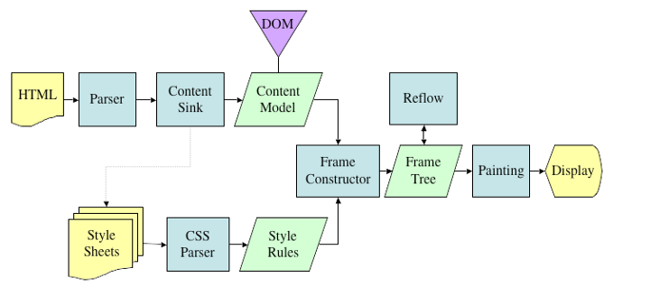
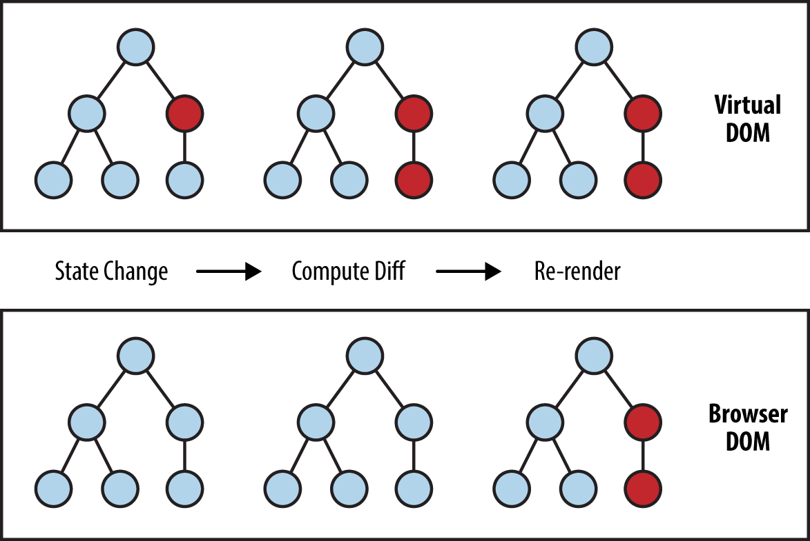

## <span class="head">ReactJS Crash Course</span>  <br> Flexibles und deklaratives Front-End mit React.js <a href="flxwu"></a>
## <span class="title">Was ist React?</span> <div class="main"> <div style="display: block;overflow: auto"> <img style="float:left;margin-right: 1rem;" class="fragment fade-in" src="./assets/frontendbackend.jpg" alt="FrontEnd and Backend" width="500px"> <ul style="margin-left:1rem;font-size: 36px;"> <li style="margin-top:-2rem"class="fragment fade-up">JS Framework für dynamische User Interfaces</li> <li class="fragment fade-up">Das <em>V</em> in MVC (Model-View-Controller)</li> <li class="fragment fade-up">JSX als HTML-Ersatz</li> <li class="fragment fade-up">Open-Source [github.com/facebook/react](github.com/facebook/react)</li> <li class="fragment fade-up">Beliebtestes Front-End Framework </li> </ul> </div> <div style="display: block;"> <i style="font-size: 7rem;" class="fab fa-facebook-square fragment fade-right"></i> <i style="font-size: 7rem;" class="fab fa-instagram fragment fade-right"></i> <i style="font-size: 7rem;" class="fab fa-whatsapp fragment fade-right"></i> <i style="font-size: 7rem;" class="fab fa-dropbox fragment fade-right"></i> <i style="font-size: 7rem;" class="fab fa-meetup fragment fade-right"></i> </div> </div> Note: ReactJS ist ein Framework für dynamische Web Front-Ends, also das was man als Nutzer als User Interface einer Webapplikation sieht. <br>In einer typischen Full-Stack Web Applikation mit Model, View und Controller bildet also ReactJS das "View". <br>React wird Open-Source von Facebook, Instagram und Hunderten von individuellen Contributern entwickelt. <br>ReactJS ist das mittlerweile sich am schnellsten weiterentwickelnde FrontEnd Framework neben Angular und wird nicht nur monatlich 9 Millionen mal heruntergeladen, sondern auch von großen Firmen wie Facebook und Instagram(also den Creatorn) sowie WhatsApp und Dropbox oder auch Meetup genutzt.
## <span class="title">Wieso React?</span> <div class="main"> <ul> <li class="fragment fade-up">Abgekapselte, wiederverwendbare <em>Components</em></li> <li class="fragment fade-up">Dynamischer <em>State</em></li> <li class="fragment fade-up">Virtual DOM</li> <li class="fragment fade-up">Unabhängig vom Rest der Applikation</li> <li class="fragment fade-up">Server & Client Rendering</li> </ul> </div> Note: React hat einige Vorteile als Front-End: <br> Components -> sozusagen Objekt Orientiert <br> State -> Die ganze Seite ist nicht statisch, Components können sich verändern, ist so gehandhabt, dass jedes Component Zustände, also States hat. <br> Virtual DOM -> Virtuelles Document Object Model, normalerweise bildet DOM die gesamte HTML&CSS-Elementsstruktur einer Seite ab, während Virtual DOM die Representation des UIs im Speicher behält und nur den sichtbaren Teil aktiv lädt. Darauf werde ich aber jetzt genauer eingehen!
## <span class="title">Virtual DOM</span> <div class="main">  </div> Note: Ich werde jetzt nicht ins Detail gehen, wie die DOM generiert wird, aber in superkurz werden aus HTML und CSS ein Content Model generiert, welches dann mit den jeweiligen Styles gerendert wird. Das Problem: Dies passiert jedes Mal, wenn sich etwas in der DOM ändert. D.h: wenn man mit normaler Javascript DOM-Manipulation ein Element verändert, durchlaufen alle nachgängigen Elemente nochmal den Reflow/Layout-Prozess und werden damit auch neu gerendert. <br>Bei großen Applikationen mit tiefen DOM-Bäumen(also großen Elementshierachien) kann die Seite so sehr langsam werden.
## <span class="title">Virtual DOM</span> <div class="main">  </div> Note: VirtualDOM versucht diese zwei Prozesse zu minimieren und die Applikation somit weitaus performanter zu machen. <br>Dies geschiet - in kurz, wer will, dem kann ich dies später auch noch näher erklären - indem nur die wirklich visual veränderten Elemente neu gerendert werden.
## <span class="title">Hallo Welt in React</span> ```javascript ReactDOM.render( <h1>Hallo Welt!</h1>, document.getElementById('root') ); ``` <h1 style="width:70%;background-color:white;color:black;margin:5rem auto;"> Hallo Welt! </h1> Note: Hier sehen wir eine React Applikation in der simpelsten Variante: <br><b>Und hier mag man sich über den vermeintlichen HTML-Tag wundern, aber das ist JSX</b>. JSX hatte ich ja bereits erwähnt, es ist quasi das Reacts HTML, weswegen man auch alle HTML Tags benutzen kann. <em>Meistens arbeitet man jedoch mit React Components, das sieht dann so aus:</em>
## <span class="title">Hallo Welt in React</span> ```javascript class App extends React.Component { render() { return (<div>Hallo {this.props.name}!</div>); } } ReactDOM.render(<App name="Frankfurt" />, document.getElementByID('root')); ``` <div style="width:70%;background-color:white;color:black;margin:4.7rem auto;"> Hallo Frankfurt! </div> Note: Hier können wir dann die Klassen aus EcmaScript 6 benutzen, und hier erbt die Klasse "App" von React.Component <br> React.Component bringt eine render() Methode mit sich, in welcher man JSX zurückgibt, welches dann gerendert wird: <em>In diesem Fall ein div mit Textinhalt</em>, und auch das div kennt man ja aus HTML <br> Einem Component kann man Parameter, sogenannte props, übergeben. <br> Diese Parameter können sowohl Attribute wie hier "Frankfurt", als auch Funktionen sein. Die Parameter werden, wie hier sichtbar, über this.props aufgerufen
## <span class="title">Was ich heute zeigen werde:</span> <ul> <li class="fragment fade-up"> Erstellen einer React App </li> <li class="fragment fade-up"> Arbeiten mit <em>Components</em> </li> <li class="fragment fade-up"> <em>JSX</em> und Styling </li> <li class="fragment fade-up"> <em>State</em> und <em>props</em> </li> <li class="fragment fade-up"> Reagieren auf Events </li> <li class="fragment fade-up"> Formulare und Eingaben </li> <li class="fragment fade-up"> <em>(Lifecycle Methods)</em> </li> <li class="fragment fade-up"> Daten von einer API laden (fetch API) </li> </ul> Note: Ich werde Euch heute zeigen, wie 1. Ihr eine React Applikation erstellt 2. das Erstellen von Komponenten 3. das Arbeiten mit JSX 4. State und properties (Letzteres wurde eben schonmal angeteasert) Dann: Wie man auf Events reagiert und wie man mit Benutzereingaben umgeht Und schlußendlich werden wir auch mithilfe der JavaScript Fetch Api Daten von einer API laden. Wenns zeitlich noch geht den "Zyklus" eines Components, also die Methoden, die bei einem Component aufgerufen werden, von denen das bereits gezeigt "render()" die wichtigste ist.
## <span class="title">Was ich <em>nicht</em> zeigen werde:</span> <div class="main"> <ul> <li class="fragment fade-up"> Routing / Navigation </li> <li class="fragment fade-up"> Refs (Objectreferenzen) </li> <li class="fragment fade-up"> Keys (Objektidentifikation) </li> <li class="fragment fade-up"> Store/State-management mit Flux / Redux <br><em>(Kommunikation zwischen Komponenten)</em><br></li> <li class="fragment fade-up"> Animationen </li> </ul> </div> Note: Hier sei angemerkt, dass ReactJS ein *extrem* großes Framework mit tausenden von Erweiterungen ist, weswegen wir nur auf die Basics eingehen können und nicht auf etwas weiterführende Elemente die bei größeren Projekten immer verwendet werden sollten
## <span class="title">Setup</span> - Yarn: https://yarnpkg.com/lang/en/docs/install/ - NPM: https://nodejs.org/en/download/ ```bash (sudo) npm install -g create-react-app (sudo) yarn global add create-react-app create-react-app my-app cd my-app npm start ```
## <span class="title">Let's code!</span>